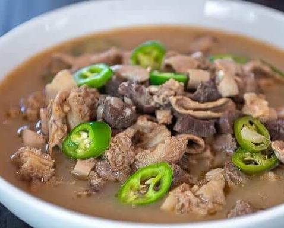

Pinapaitan

Papaitan is a famous Ilocano soup dish mostly composed of cow or goat innards. The name of this dish was derived from the Filipino word “Pait”, which means “bitter”. The bitter taste of this soup comes from the bile. This is a bitter juice extracted by the liver and stored in the gallbladder to aid digestion.
Ingredients
- Meat and Offal: 1 kg of goat or beef meat, tripe (tuwalya), and intestines, cleaned and sliced into bite-sized pieces.
- Bile: 2 to 3 tablespoons of pure bile (apdo), or dissolved bile powder.
- Sourening agent: 1/2 cup of sliced kamias or tamarind juice.
- Aromatics: 1 head of garlic (minced), 1 large onion (chopped), and 2 thumbs of ginger (julienned)
- Pork or beef broth/water: 4 to 6 cups.
- Flavorings: Fish sauce (patis) and ground black pepper to taste
- Spice: 5 to 8 pieces of whole or sliced siling labuyo (bird's eye chilies)
- Oil: 2 tablespoons for sautéing
Step-by-Step Process
1. Boil the pork: In a large pot, combine the pig ears, face, and liver with water, salt, peppercorns, and bay leaves. Simmer for 40 to 60 minutes until the meat is tender.
2. Drain and cool: Remove the meat from the pot and let it cool completely.
3. Grill the meat: Grill the boiled pork parts over hot coals until they have a light char and smoky flavor.
4. Chop the ingredients: Cut the grilled ears, face, and liver into small, bite-sized pieces.
5. Make the dressing: In a large mixing bowl, whisk together the mayonnaise (or mashed pig's brain), vinegar or calamansi juice, minced ginger, and half of the sliced onions. Season with salt and pepper.
6. Toss together: Add the chopped grilled pork and remaining onions into the bowl. Mix well until every piece is coated in the creamy dressing.
7. Add heat: Stir in the chopped chili peppers.
8. Rest and serve: Let the dish sit for 10 minutes so the flavors blend, then serve.